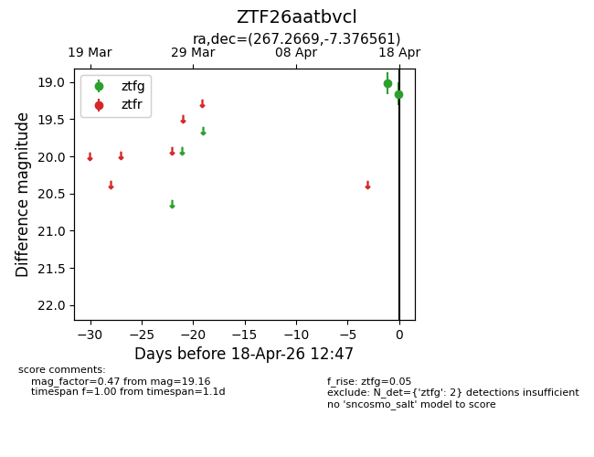
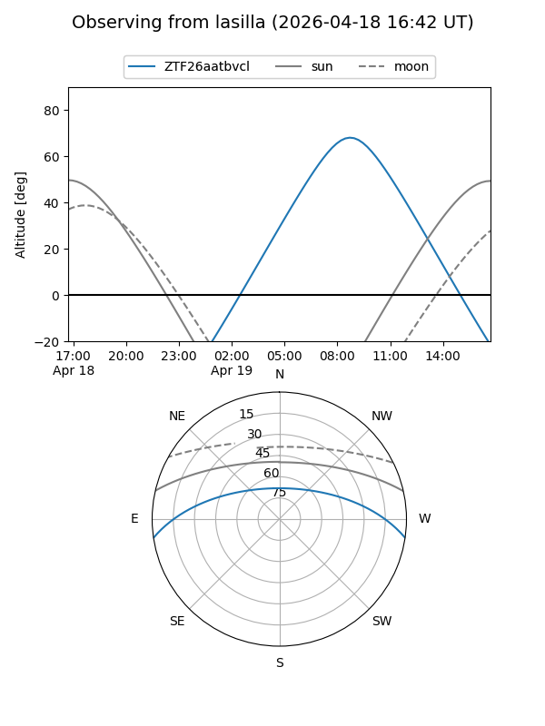
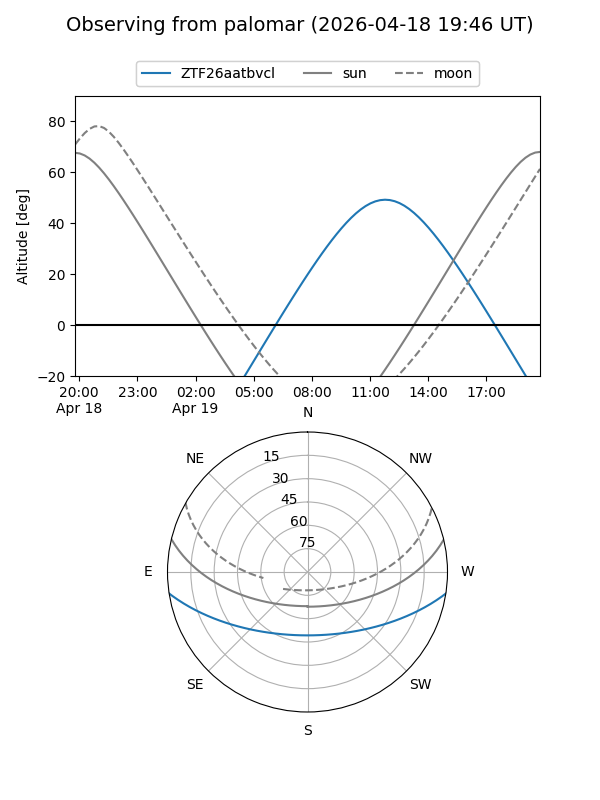

ZTF26aatbvcl
Target ZTF26aatbvcl at 2026-04-18 12:52
Aliases and brokers:
FINK: link
Lasair: link
ALeRCE: link
alt names
ZTF26aatbvcl (ztf,fink_ztf)
Coordinates:
equatorial (ra, dec) = 267.2669,-7.37656
equatorial (HMS+DMS) = 17:49:04.06,-07:22:35.62
galactic (l, b) = (19.0646,+10.29407)
Flags:
Photometry:
last ztfg=19.16
2 ztfg detections
Lightcurve

Visibility


Additional plots